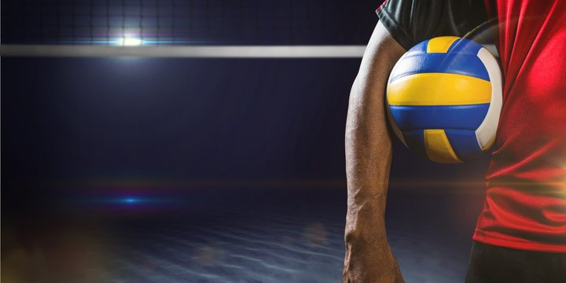
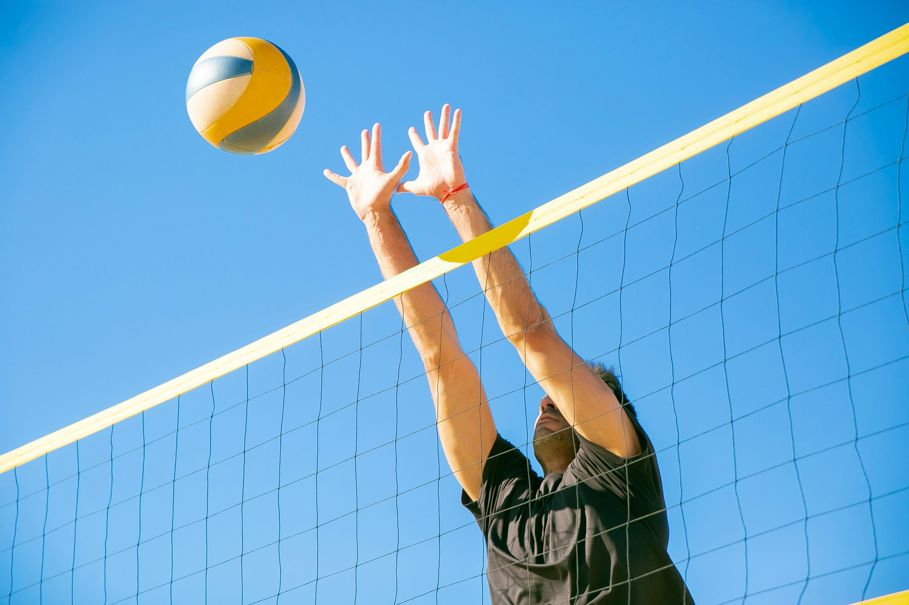
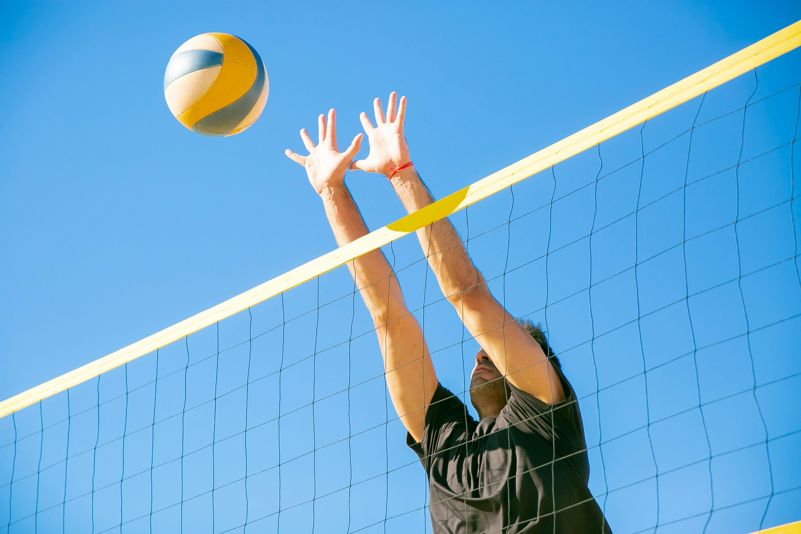

VOLLEY BALL!

Volleyball Overview
Volleyball is a team sport where two teams of six players are separated by a net. Teams score points by grounding the ball on the opponent's court under organized rules. It has been part of the Summer Olympics since 1964, with beach volleyball added in 1996. The Paralympic version of the sport is sitting volleyball.
Gameplay
A match starts with a player serving the ball over the net to the opposing team. Key rules include:
Key Techniques
Volleyball emphasizes skills like spiking, blocking, passing, and setting. Vertical jumping ability is crucial for above-the-net plays. Specialized positions and offensive and defensive strategies are also integral to the game.
History
Each team consists of six players.[21] To get play started, a team is chosen to serve by coin toss. A player from the serving team throws the ball into the air and attempts to hit the ball so it passes over the net on a course such that it will land in the opposing team's court (the serve).[21] The opposing team must use a combination of no more than three contacts with the volleyball to return the ball to the opponent's side of the net.[21] These contacts usually consist first of the bump or pass so that the ball's trajectory is aimed towards the player designated as the setter; second of the set (usually an over-hand pass using wrists to push finger-tips at the ball) by the setter so that the ball's trajectory is aimed towards a spot where one of the players designated as an attacker can hit it, and third by the attacker who spikes (jumping, raising one arm above the head and hitting the ball so it will move quickly down to the ground on the opponent's court) to return the ball over the net.[3] The team with possession of the ball that is trying to attack the ball as described is said to be on offence.

 



Creation
Rules And regulations
Sky Ball
Description: A type of underhand serve in beach volleyball where the ball is hit extremely high, descending almost vertically.
Characteristics:

Creates visual and positional challenges for the receiver.
Primarily a tactical distraction rather than a high-speed attack.
History:
Popularized by Brazilian teams in the 1980s and notably used by Adrian Carambula during the 2016 Olympics.
Topspin
Description:
An overhand serve where the ball is tossed high, and the player snaps their wrist to generate topspin.
Characteristics:
Causes the ball to drop quickly and follow a straight flight path.
Hit with considerable force, targeting specific opponents or areas.
Usage: Frequently used at intermediate and advanced levels.
Difficult for opponents to anticipate.
Comparable to a "knuckleball" in baseball.

Usage: Common in all levels due to its strategic advantage.
Jump Float
Description: Combines elements of the float serve and jump serve, with the ball tossed lower than a typical jump serve.
Characteristics:
Maintains unpredictability of the float serve while incorporating the added momentum of a jump.
Usage: Increasingly favored at higher levels for its balance of power and unpredictability.
Equipment
olleyball: The primary equipment, available in indoor, beach, and outdoor variations. Net and Poles: A regulation-height net is essential, supported by sturdy poles. Court Markings: Boundary lines for precise gameplay; may include portable tape for setup. Knee Pads and Shoes: Protective gear and non-slip footwear for player safety and agility.